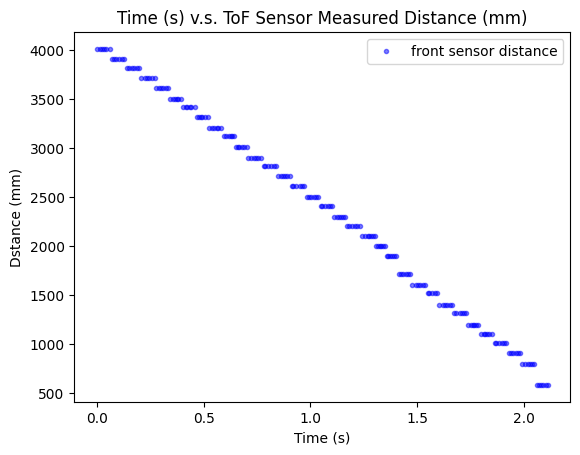
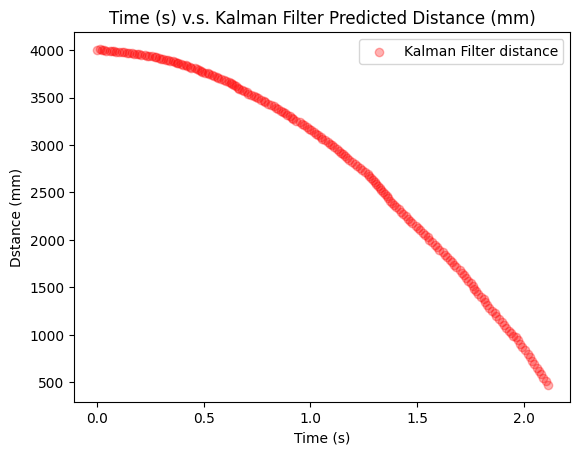

The purpose of this map is to construct a 2D map of an area with obstacles based on the measurements obtained from ToF sensor. The area is setup in the lab with boxes as obstacles and wood boards as boundaries, shown in picture below. The robot is programmed to spin around on multiple spots placed within the area and collect distance readings when spinning. Eventualy, all the data from different spots are combined to create a point based map of the area, and a line based map is created by connecting points together.
 The Area to Create the Map
Lab Tasks
Control: Open Loop Control
Since I am running short of time, I decide to implement open loop control to make my robot spin around on the spots to record ToF sensor readings. After conducting several tests of the spinning on a spot in the area, my open loop control program is designed as below.
Open Loop ControlI decide to collect 25 points during the 360 degree spinning, which means approximately 14 degrees per point, with this relatively high resolution, hopefully the points-based map can be accurate enough.
The video below shows the open loop control implemented on my robot to make it spin on one spot collecting distance readings.
Open Loop ControlThis open loop control is repeated on the five spots within the area. Below are plots for the implementation of open loop control on one spot.
Distance Data from ToF Sensor
The distance data is replotted in a polar graph so that the measured distances from different directions are more intuitively demonstrated.
 Distance Data from Kalman Filter Prediction
The PWM duty cycle percentage during the spinning process is always 80%. My robot spins 100 ms using this PWM for approximately 14 degrees.
Read out Distances
Since there are five marked spots within the area, I execute my turn at each of them and get the measured distances. For each spot, I conduct the turn for twice with robot placed in the same orientation to verify the precision of collected distances. Eventually, the polar distance plots for the five spots are shown below.
Polar Plot for spot (COORDINATE)
Polar Plot for spot (COORDINATE)
Polar Plot for spot (COORDINATE)
Polar Plot for spot (COORDINATE)
Polar Plot for spot (COORDINATE)
Merge and Plot Readings
After I have all the measured distances for each marked spots, they are converted into x and y coordinates, and combined together to form a point-based map with different colors. Since initially, the data points in polar plots are in theta-distance format, some mathmatical operations are needed to convert them into x and y coordinates format:
Math Operation to Convert to X-Y Coordinate
After converting all the points into x and y coordinates, I can use the transformation matrices learnt from lecture 2 to convert the measurements from the distance sensor to the inertial reference frame of the mapping area. Since each spot has its own x and y coordinates (in feet) with respect to the center of the area. The data points are hence calibrated by adding the coordinates of the spots which the data are measured on. It needs to be notice that the unit after conversion is in mm to match the distance measurement uint (1 foot = 304.8 mm).
Eventually, x and y coordinates of all the converted data points are combined into one single array respectively and plotted as below.
Point-based Map
I write Python script to conduct the process above and the code snippet is shown below.
Python Script for Data Conversion & ValidationLine-based Map
To convert the map into a format that can be used in the simulator in future labs, the actual positions of walls and obstacles are estimated based on the scatter plotted map above. After observation, I extract some spefic "boundary" points to form lists of start and end coordinates of wall and obstacles. The points in the lists are drew in lines on top of the points-based map.
The lists of x and y coodinates for walls and obstacles I extract to form the line-based map are given as below.
Lists for Line-based Map
The line-based map is hence plotted as below.
Line-based Map
Texts and Videos by Zhongqi Tao